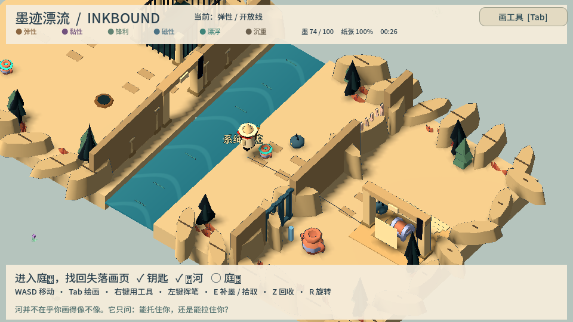
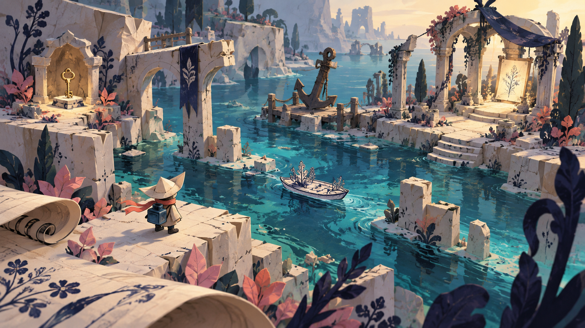
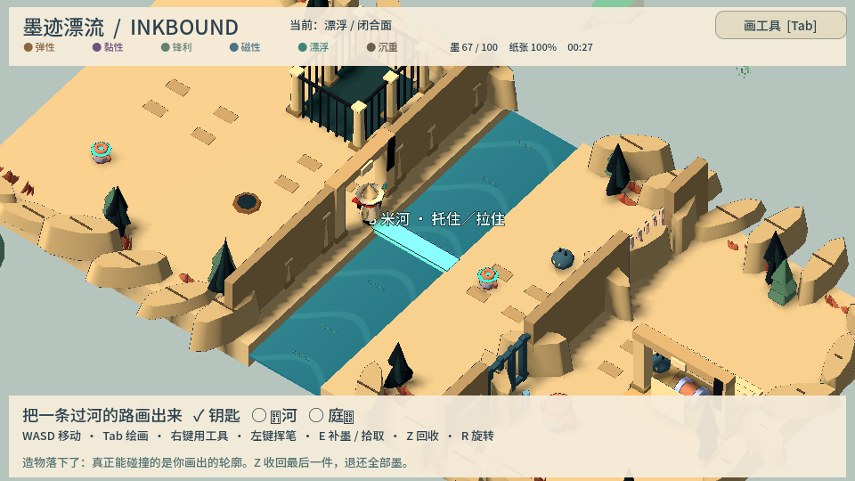
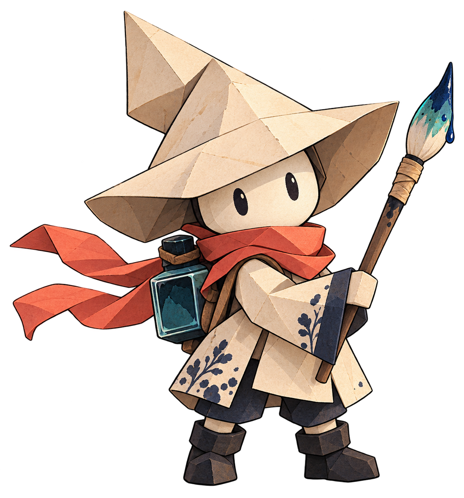

⌁线 + 弹性
把线伸向对岸。够到了，就让它带你过去。

把捡来的性质，放进你画出的形状里。
线能拉，面能托。另一种办法，
可能就在下一笔里。
不必画得像一艘船。观察你手上的字，看看它能怎样改变这条线、这片面。

把线伸向对岸。够到了，就让它带你过去。

画出能托住自己的轮廓，亲手踏上一条新的路。
走近词条拾起它，Tab 打开画纸。
画好后装配词条，右键把工具用到场景里。
取回钥匙，渡过墨河，找回失落画页。
墨泉随时补给，放心试试另一种办法。

这位学徒醒在一本被冲散的绘本里。门后的钥匙、过不去的河、缠住庭院的藤根，都在等一种新的办法。
拿起地上的字，把用途画出来。你带回来的这一页，会记住你选择的路。
游戏实机录制，包含绘画、词条装配、渡河与通关。
上方关卡预览为实机截图。封面为场景概念图，角色大图为原创设计图。